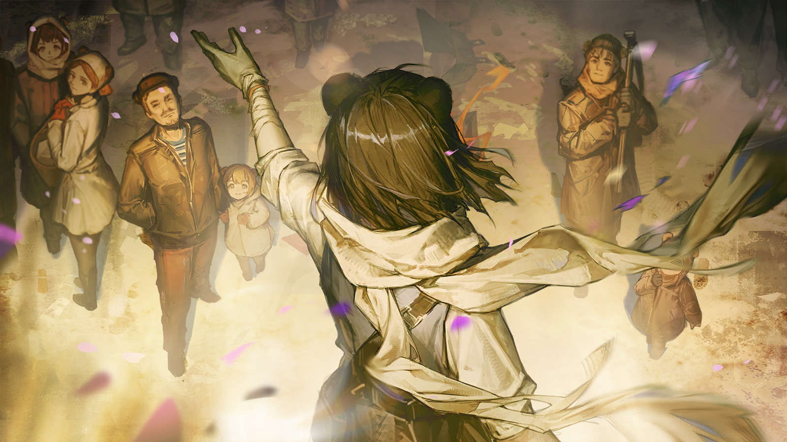
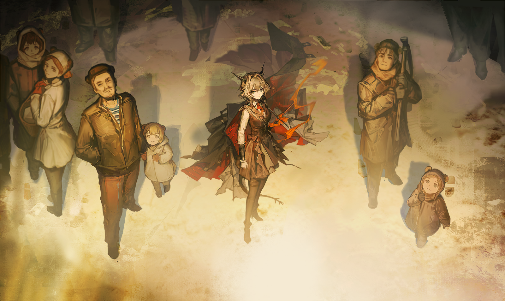

希尔达
......阿纳托利，他这次为什么不要我跟去？

希尔达
他要去，做什么？

胆大的侍从
您还是不知道为好。
胆大的侍从
请您相信，小将军一定不会违背和您的约定。
希尔达
......

不耐烦的声音
......麻烦......
恐惧的声音
求求您——求求您！所有的资料都在这儿了，都在这儿了！
恐惧的声音
可唯独那扇门，我真的不知道......我不知道那扇门怎么打开！
恐惧的声音
我们都没有权限，除了艾丽塔主任，可她......

克利姆
......
人群最后，在卫兵的包围之中，克利姆仍控制不住地，回头去看那具被抛弃在昏暗走廊之中的尸体。
他明明什么也看不到，却反复地、神经质地不断回头，直到卫兵的刀柄重重打在他的头上。

卫兵
（低声）老实点！
不耐烦的声音
那么，剩下的这些人......

阿纳托利
你们之中，谁能告诉我，为什么现在连我的权限也不起作用了，嗯？
阿纳托利
难道我的优先级，甚至比不上一个小小的实验室主任吗？
沉默。因为畏惧于随时可能降临的灭顶之灾，没有任何人胆敢轻易开口。

阿纳托利
喂，第一排最靠近尸体的那个，你说。

畏缩的研究员
......就是，这扇门只有少数几个高级研究员可以打开，为了防止泄密或者出于安保方面的考虑——
阿纳托利
甚至连我也要被拒之门外？
畏缩的研究员
啊——
阿纳托利
先别杀。告诉我，这里其他的高级研究员都在哪儿？
畏缩的研究员
......都、都被您——

阿纳托利
哦，那真是不巧。不过，你既然这么清楚它的状况，那应该也知道应急手段？
阿纳托利
不可能没有的吧，这种地方。
阿纳托利
还是说，你知道，但不愿告诉我？
畏缩的研究员
不——不，对不起，我不知道，我只是根据经验推测，这是我的工作——
畏缩的研究员
对不起，小将军，我——

阿纳托利
没用的东西。

阿纳托利
嘶......
阿纳托利
浪费时间。给我从右起开始杀，杀到有人给出解决方案，或者全杀光为止。
卫兵
那元帅的命令？
阿纳托利
母亲只是要我带回研究成果，没说一定要连底下那东西也带走。
阿纳托利
只要我努力过了，母亲不会责怪我的。
他朝地上那些尸体和血泊一指，脸上带着天真的笑容。
卫兵
......是，您说得对。
阿纳托利
真不明白为什么会有人争着要这玩意，不供能就会爆炸的炸弹，还不如直接轰个干净，然后从头再来。
阿纳托利
居然就是这样的东西，害得母亲不得不放弃泽尔格勒......真该死。
站在最后的男人已经听不清楚，那些尖叫、逃跑、被抓回后处决的声音，像工厂里一道全自动的工序一样，自行运转起来。
他没再尝试转头，而是在这样的声音中，不断回想起只看到一眼的妻子的尸体......
而后无知无觉地跪在了地上。
克利姆
......艾丽塔......
卫兵
喂，起来！
卫兵
给我站起来！
阿纳托利
......
少年打了个手势，示意卫兵停下。一个涕泗横流的人被拽了起来，扔到一边。紧接着，少年朝跪着的男人走过去。
恐慌而麻木的人群自动为小将军分开一条路来。
阿纳托利
你在说什么？你为什么跪下？
克利姆
艾丽塔......
阿纳托利
你认识那女人？
克利姆
我不能......离开她。
卫兵
小将军，这人只是实验室的后勤人员，负责打扫杂物的，兴许只是被吓傻了。
阿纳托利
不，他肯定跟那个故意放人进入原型核心的女人有关系。

阿纳托利
他可能比其他人知道得更多。把他拽起来，用刀，用别的什么法子，总之把他给我弄清醒点——

希尔达
阿纳托利！

阿纳托利
......希尔达？你怎么——
阿纳托利
你没有听我的话。
希尔达
这次，是您违背了我们的约定。
阿纳托利
我没有！
希尔达
那这些倒在地上的躯体，这些颤抖着的、可怜的人......还有您身旁那位跪着的先生，又是怎么回事呢？

希尔达
您还在——您还在伤害他们，同时也伤害自己。当您轻易地夺取他人性命的时候，也在给自己的痛苦增加砝码。
希尔达
我没有办法......我无法阻止您，只能眼睁睁看着您滑向堕落，您就要得不到救赎了，阿纳托利。

阿纳托利
我可以，我能得到救赎！只要你还在我身边——只要你一直在我身边！
阿纳托利
为什么......为什么所有人、所有人都要如此逼迫我？
阿纳托利
母亲对我很失望，这些下人也不会尊重我......他们都把我当作一无是处的怪物，难道连你也一样吗？
希尔达
阿纳托利。
阿纳托利
嗯......嗯？
希尔达上前，轻轻地握住少年的双手。少年比她高，身形比她修长，那双手也显露出青春期时特有的不合比例，是一双宽大的手。
她握住那双手，而后缓缓用力。
希尔达
我不知道您说的怪物，究竟是什么，但真正的怪物是不会对他者的目光有所反应的。在怪物的心里，只有它自己存在。

希尔达
而您，会因他人的嘲笑而愤怒，会因朋友的离开而哭泣......您感到痛苦，不是吗？
希尔达
您一直违背自己的想法去伤害别人，甚至到了意识不到这也是对自己的损害的程度。
希尔达
我相信在您的内心深处，您是不愿这样做的。您今天的反应，证实了我的猜测。
希尔达
您说，所有人都在逼迫您。
希尔达
而我相信。
阿纳托利
你相信......你相信我？这意味着你不会离开我了，是不是？
希尔达
我不想离开，可如果您一直这样，无法改变分毫的话，我将不得不离开。
希尔达
因为您很累，再这样下去，您也会垮掉。而我将只能眼睁睁地看着您，走向那个既定的未来。
阿纳托利
......连你也不愿救我了？
希尔达
不是不愿意，而是没有办法。我做不到。我说过，我可以抚去您身体上的疼痛，却无法抚去您心灵上的疮疤。
希尔达
它一直在渗血，您难道没有发现吗？
希尔达
您在为自己无法满足母亲的期待而痛苦，可一个母亲，为什么要对自己的孩子这样残酷呢？
希尔达
她把您抛掷到这样的境地，让您不得不违背自己的意愿，去毁掉一座美丽的城市，去结束许多无辜的生命。
希尔达
她把您推到一切问题的面前，也许是因为相信您能承担，可如果您一开始就根本连选择的权利也没有，那她相信的究竟是您，还是......
希尔达
一柄工具？
阿纳托利
......
希尔达
工具是可以被更换的，阿纳托利。可您既不是工具，也不是怪物，不是吗？
阿纳托利
那我该......怎么做？
阿纳托利
希尔达，告诉我吧，告诉我——
希尔达
也许，只是去证明给她看。
希尔达
证明您并非工具，而是一个活生生的人。

疲惫的矿工
......图林，我们已经召集了这附近的大部分人，瑭雅已经尽力了，不是所有人都愿意来。
疲惫的矿工
整合运动在帮我们突袭军队岗哨，我们要抓紧时间了。

图林
......嗯，辛苦了。
居民A
瑭雅，你说有什么重要的事情要说，还事关我们的性命。不是又在骗我们吧？

瑭雅
不，绝不是。
许多人站在那里，阳光照在脸上。多数人带着平静安和的神情，不解地向众人投来疑惑的目光。
矿工队伍中，人们已然按捺不住心中的怒火，自地狱归来的他们只觉得这些虚伪的面容是那么可恨，他们挽起袖子，捏着拳头......

雷德
塔露拉，是时候了。

塔露拉
你说什么？
雷德
像过去一样做你最擅长的——站出来，说点能鼓舞大家的话。
塔露拉
雷德......我不确定，自己还有没有这个资格。
“啪”——
有人拍了拍她的背。塔露拉转身看去，图林正在对自己微笑。随后，这位一贯沉稳的青年领袖跨出两步，来到大家的面前。

图林
各位泽尔格勒的朋友！我的名字是伊凡·图林，站在我身后的，都是我的同伴。
图林
我和你们没什么不同，也是一名被乌萨斯驱使的工人，在北原的坑洞里挖了十几年矿。
图林
那十几年，每天我从矿里上来，总会第一时间看看头上的天空，记着云彩的形状，记着晒着太阳的温暖，记着踩过桦树叶子的声音。
图林
每当我深入最危险、最昏暗的矿井里时，我只要闭上眼睛，那些美好的事情仿佛都能涌向我的身边。
图林
然而，就在刚才，我做不到了。

图林
我看见了，比矿井昏暗百倍的事物——就在你们脚下，在你们看不到的地方，活生生的乌萨斯人正在被残忍地杀害。
居民A
你是在说......？

图林
这里有人看见了，我们是从附近的独立区域而来。我们在那里发现了军方的实验室，知晓了他们的秘密。
图林
你们是否担忧过，为什么泽尔格勒要接纳外地的矿石病人，为什么所有矿石病人都要统一聚集——

图林
因为第一集团军的源石储备已经捉襟见肘！他们拿病人当柴火一样烧，然后去搞石墙里的那些恶心的实验！
图林
你们不会想知道，感染者正在以何种没有尊严的方式死去——
居民B
我的侄子有轻微的矿石病，他也被那些军人带走了！
图林
还有机会，我们正在对抗第一集团军，但首先要保证你们的安全。
居民C
我们的安全？为什么？那些恶心的实验又是什么？
图林
他们正在进行的研究，能够扩散不知名的感染病......你们中有些人已经见过了它，那些青色的脓包，布满全身的斑点——
图林
你们中，有人的亲人，甚至已经因此死去......这就是第一集团军无可洗刷的罪行！
听到这种“怪病”，吵闹的声音又一次响起，他们不断讨论着，确认彼此的表情。有人的脸色变得凝重，有人则看向了瑭雅。

关切的居民
瑭雅，你说的怪病就是这么来的？

瑭雅
......是的。

瑭雅
我最小的妹妹，妮娜，你们许多人见过她，还有人抱过她......
瑭雅
她就是得了这种怪病，纳杰日达医生收治了她，她却被那些披着军服的歹徒夺走......直到现在——

瑭雅
妮娜......她离开了我们！
当襁褓被瑭雅举过头顶，热闹的现场顿时安静了下来，许多居民都认得那块布。
他们都见过名叫瑭雅的女孩抱着襁褓里的妹妹穿梭于每一个工厂、每一条街道，脸上永远带着幸福的笑。
居民D
可我们确实没有见过这种病......

瑭雅
......马克见过，妮娜生病后他照看过一阵子，他在哪里——

？？？
我......
关切的居民
你是......马克？
虚弱的居民
我......不该那样否认你的，瑭雅。因为我真的，很害怕......
虚弱的居民
可我不能......继续害怕下去了。
他褪去身上的外套，朝前方走了两步，露出可怖的脓疱。身边的居民尖叫了起来，从他身边四散着逃走。
瑭雅连忙扶住了他，曾经热情的邻居，现在是如此疲惫、虚弱，带着人人恐惧的病症与创伤，连行走都变得如此艰难。

图林
......诸位，你们都看到了，这个不幸的可怜人。

图林
但或许你们并没有意识到——

图林
如果我们再不行动，而是蒙上耳朵，去享受他们赏赐的麻木。
图林
那么这种不幸，随时都有可能降临到我们每一个人头上！
图林
第一集团军，那些道貌岸然的诈骗犯，他们说，外面的炮声是为了保护我们；他们说，那些消失的邻居是去“接受治疗”了......
图林
骗子！全是卑鄙无耻的骗子！他们不在殴打囚犯的时候，就在炮制着这些谎话。
图林
“秘密实验室”里没有医生，只有屠夫，他们把我们的兄弟姐妹关进罐子里，像切牲口一样切碎。
图林
这就是乌萨斯给我们的“恩赐”吗？这些悲惨的人就是他们希望看到的乌萨斯人吗？

图林
那些当官的、拿枪的，他们吃着我们做的面包，住着我们盖的房子，回过头来，却要把我们变成他们实验台上的烂肉......
图林
只要他们需要，他们就会去把我们制造成矿石病人，变成他们想要的模样。曾经，他们也是这样制造了我们的贫穷与苦难！
图林
看看脚底下的这片土地，它已经烂透了。它在散发着几十、几百年来的腐臭和血腥的味道！
图林
而如今，有两条路摆在我们面前。
图林
要么，去做那些蛀虫的矿石，回到所谓的“家”里，排队等候着被送进冒着烟的烟囱之下，躺在集团军为我们布置的坟墓里。
图林
要么，跟着我走，走出这个僵死的地方。是的，这条路只有冷风，但这条路是站着走的路，是我们天生就该走的路！
图林
来吧，我们要带走所有的孩子，带走所有的亲人，带走所有的朋友——
图林
让他们守着废墟哭泣吧，让那些空洞的灵魂也尝尝一无所有的滋味！
图林
为了所有人的明天，跟我走，离开这座坟墓！
喊出最后一句口号时，人群中爆发出热烈的呼声，几个熟悉的身影也再度出现在面前——整合运动已经拔掉了附近的岗哨。
图林的目光扫过雷德，扫过西尔卡，最后停留在正前方——注视着塔露拉的双眼，直到掌声与呼声渐渐弱去。
塔露拉没有眨眼。她回想起刚才民众看着图林的表情，她也见过那样的表情。
多年前的广场上，人们就是这么望着自己，带着那副“只要跟着塔露拉，我们什么都能做到”的表情，充满希望的表情。
塔露拉笑了，也许是如释重负的笑容。仿佛是在漫无边际的荒原中独行了许久，突然看到了另一排平行的脚印。
她仿佛又看到了，在冰冷的北原无数个走在自己身边的人。
雷德
......塔露拉，图林的人都已经准备好了，他们负责发动和组织其他园区的民众撤离，我们会按计划为他们吸引军方的注意。

塔露拉
可露希尔，你那边呢？

可露希尔
随时可以出发，这次说什么也要冲进石墙的内部。
塔露拉
嗯。雷德，不要恋战，掩护这里的民众安全撤离是第一要务。
雷德
明白。
雷德
......保重，塔露拉。
塔露拉
......我还有一些事情，要和整合运动的大家交代，你们可以先走一步。

可露希尔
好。西尔卡，我们先走。
人群逐渐散去。塔露拉缓缓回头，红发的瑞柏巴正坐在不远处的台阶上，静静地盯着她。

弑君者
现在这里只有我们了，塔露拉。
弑君者
开始吧，你所有的借口，明明可以在暗处苟活却选择再度现身，搅弄风云的缘由——

塔露拉
柳德米拉，我必须要向你道歉。

弑君者
......什么？
塔露拉
不止是向你，还要向那个时候的人们，那些相信我会给他们带来未来的人们......
塔露拉
即使他们中的许多人，已经没有机会听到了......
弑君者
所以你来到泽尔格勒，就是想赎罪吗？
塔露拉
谈不上什么赎罪，我只是想做到那些......我曾经没有做到的事。

弑君者
（小声）......够了。
塔露拉
接下来，你要和可露希尔一起去找石棺吗？
红发的青年人回头望向那些往城外方向走去的人群。他们的脚步声，和不知是从什么方向传来的炮火声，组成了喧嚷的背景音。
她明白现在没有太多时间停下来。无论她们要谈论的是过去还是未来，都不是这有无数人的生命正受到威胁的当下最该关心的问题——
但她还是说出了口。
弑君者
不。
弑君者
尽管我因为一份情报，本应该去里面一探究竟，但我也预料到会出现意外，早把这份情报告知给了其他必须找到石棺的人。

弑君者
如果我的推测是对的......那答案，应该就在那里面。
弑君者
......说来奇怪。直到不久前我才意识到，其实很多事我都已经不必自己独自背负了。
塔露拉
......
弑君者
而且，你知道的。要是在城区巷道中作战，我的源石技艺能抵上一支军队的作用，那些烟雾可以掩护更多人撤离。
塔露拉
柳德米拉，我的意思是，你的父亲曾为石棺付出一切。我不是在劝你改变主意，但如果你留有遗憾——
弑君者
听着，塔露拉。我曾经怨恨过你，就像怨恨无能为力的自己。
塔露拉
柳德米拉......
弑君者
我怨恨过那些谎言和背叛，直到......某一天我突然察觉，当时那些羁绊着我的念想，已经变得不再沉重。
弑君者
渐渐地，我又有了更多要去做的事。比如现在，我该和那边的人一起出发了。

塔露拉
伊凡·图林......一个了不起的人。
弑君者
哼。我倒是也听说过这个名字。文章写得不错，尖锐得像把刀子，可是人到底怎么样，还有待考察。
弑君者
总之，我不会再相信无瑕的领袖那一套了。
塔露拉
也许你是对的。
弑君者
所以，你看，我们不需要继续一起行动，我们各有战场。我必须先去帮更多人撤离，而你......
弑君者
你必须去做到你曾经没能做到的事。
塔露拉
......好。
塔露拉
我会的。

斯乔帕
......那我也还有......最后一个要求。
叶甫根尼
哦？你现在还能用什么和我提要求？

斯乔帕
凭“利沃诺夫号”是现在第四集团军中离泽尔格勒最近的单位。
斯乔帕
你知道我有得选，我可以选择直接“帮助”你和第一集团军开战，鳞死网破，两败俱伤。
叶甫根尼
你宁愿和西尔卡少尉到下面去重逢也不愿就这样认命吗？真是感人。

斯乔帕
那就让我再听一次她的声音。
斯乔帕
最后一次——
斯乔帕
在这之后，“谢钦”会一切按照你的计划行事，如你所愿。
叶甫根尼
......
叶甫根尼
把她带过来。
斯乔帕
感谢你的仁慈，总司令阁下。
冷淡的声音
......斯乔帕——
一模一样的声音。和无数次在断续的通讯中向他汇报情况时一样的声音。
并不像是在身边时、在对面交谈时听到的那样，而只是在战场上，在训练中，在一切难以仔细辨认情绪的紧迫情况中——
都一样平静而冷淡的声音。

斯乔帕
......西尔卡，我会找到你。
冷淡的声音
不要——不，斯乔帕，不要为了我。
斯乔帕
不仅是为了你。我不会再让任何战友只因为得了矿石病就不得不被驱逐。
斯乔帕
我要把你们所有人都找回来。
叶甫根尼
......狂妄......
斯乔帕
而现在，我要出发了。
斯乔帕
在那之前，我想要你告诉我，我们上一次分别时，你对我说的最后一句话——
叶甫根尼
好了，把她带走——
斯乔帕
——是什么？
冷淡的声音
......
叶甫根尼
把她带走！
叶甫根尼
拉辛少校，我已经满足了你最后的要求。不要得寸进尺。
斯乔帕
是的，你满足了，而我别无所求。

斯乔帕
只是有些伤感，看来她已经想不起来了。
斯乔帕
但我记得。她对我说的最后一句话是：“在死亡到来之前，我们不会再见了。”
叶甫根尼
真是个残酷的女人。
斯乔帕
挂断通讯。

谨慎的士兵
是！
叶甫根尼
斯乔帕·拉辛！你——

奥列格
斯乔帕，那真的是西尔卡——

斯乔帕
我太蠢了。
奥列格
什么？

斯乔帕
那不是西尔卡。那一直都不是西尔卡！
斯乔帕
那只是战争术师模仿的声音，以所有在公用通讯里被截取的内容为蓝本，我却该死的过了这么久才听出来！

斯乔帕
怪不得他不让我带走那把匕首，那恐怕也只是源石技艺的产物，根本维持不了形状......
奥列格
我只听明白了一个，你说刚才那不是西尔卡。有完全的把握吗？
斯乔帕
他们努力揣摩过西尔卡的说话方式，甚至编造了她被捕时尝试自杀的细节来增加可信度，但不对，回想起来每句话都不对。
斯乔帕
战争术师无法读取记忆，所以他们不知道西尔卡曾经跟我说过什么。

奥列格
而且那大小姐咋会一被抓就自杀，她要自杀也得先带几个人垫背啊。

斯乔帕
哈。连你都能轻易发现的问题，我却到现在才想明白。真是蠢得没边了。

奥列格
那我们还要继续跟叶甫根尼那老东西干吗？

斯乔帕
......不，当然不。

斯乔帕
奥列格，你立刻让舰上所有能使用隐蔽类源石技艺的人集中到甲板上，用我教过的办法，把“利沃诺夫号”从坐标网络里暂时抹除。
斯乔帕
叶菲姆，调试设备，等全舰隐蔽之后......

斯乔帕
我要开始全舰广播。
疑惑的士兵
嗯？头儿又有什么指令吗？

吵嚷的士兵
不会又要赶我们下船吧！那我只能躲到锅炉房里去——
广播里的声音
“利沃诺夫号”全舰注意，这里是斯乔帕·拉辛。
吵嚷的士兵
好正式......这是怎么了？
广播里的声音
首先，让我们忘掉我先前所决定的所有蠢事，或者你们尽可以在一切都尘埃落定之后，再回过头来嘲笑我。
广播里的声音
我接下来要宣布的，是另一件更重要的事。
广播里的声音
我已经将“谢钦”的指挥权限，转交给奥列格·赫尔米尼茨基。一个你们都熟悉和尊敬的好家伙。
吵嚷的士兵
什么？
担忧的士兵
指挥权限转让......
担忧的士兵
首领，你要去哪里？
广播里的声音
......在十二月的那场剿灭行动之后，我就常常思考“自由民”，又或者由我们这些自由民组成的“谢钦”，究竟意味着什么。
广播里的声音
非战时，我们接受相对的优待，替陛下照管着移动城市之外的广袤土地，却同时也要承受天灾的侵袭，不断地迁徙与分离。
广播里的声音
战时，我们是骁勇的战士，是各个集团军手中最锋利也最灵活的那把武器，却始终游离在外，难以融入，得不到善终。
担忧的士兵
......
广播里的声音
我时常想，难道就是这样了吗？长久以来我们这样的非乌萨斯人都这样活着又这样死去，可这就是对的吗？
广播里的声音
现在我想清楚了，不是这样。所以，我们要脱离现状。
广播里的声音
......其实早在我们辗转加入第四集团军之前，我就应该想清楚的。
广播里的声音
更远的事迹都已经被遗忘，就连最近的我们的父母一辈，曾在大叛乱中做了双方的前锋，却也最终没在历史上留下任何姓名。
广播里的声音
而如今我们又要走上他们的老路，去到那只能看见漆黑的死亡的尽头吗？
广播里的声音
不，我们不要这样。
勤劳的士兵
没错......
广播里的声音
作为首领，我理应去为大家争取。即使只是争取一个打破现实的机会。
甲板上、控制室内、锅炉房中、仓库角落，无数人抬头聆听他们首领的宣告，无声地点头，又或者疑惑地等待。
他们发自内心地认同，让这些话在胸腔里激起一阵阵涟漪，即使他们并未全部理解其中的含义。
斯乔帕
是的，西尔卡没有被叶甫根尼抓住，我们都受到了他的蒙骗。
斯乔帕
而在他使用这样卑劣的计谋，只为毫不留情地要将我们当作人肉缓冲垫送向与第一集团军的冲突前线的当下——
斯乔帕
我们不应继续坐以待毙了。
斯乔帕
有些已经死去的人说得对，我们只是没有看见，乌萨斯正在燃烧。
斯乔帕
北部的矿场关闭了，中部的工厂停摆了。愤怒的工人举着武器走上大街，就连那些学生也挥起了细瘦的拳头——
斯乔帕
我得说，向乌萨斯要求兑现承诺的时候到了。
斯乔帕
我要这艘船上的人不再为散播恐惧服务，不再为欺压平民服务。
斯乔帕
我要我们脱离第四集团军，脱离任何只把我们当作武器的地方。
斯乔帕
哪怕这意味着要去见维伊，我也要夺取属于“自由民”的，真正的自由。
斯乔帕
哈......
斯乔帕
我宣布，“利沃诺夫号”不会继续驶向泽尔格勒，从此以后，特殊战术兵团“谢钦”，也不再属于第四集团军。
斯乔帕
我会亲自将此事告知叶甫根尼——
斯乔帕
——谁！
？？？
叛变、煽动、以下犯上......
？？？
你们违背军法，你们背叛指令。
？？？
你们......该死。
下一瞬间，四周空间陡然变换，斯乔帕感觉自己被抓取到一处不属于军舰的独立空间之中。
“莫尔凡”。明明是“冻结的空间”，受审讯者却永远像是在被火灼烧，无论是大脑还是身体。
他知道，这只是幻觉，可也意味着他必须打起十二分的精神，来将自己从幻觉中拔出。
斯乔帕
叶甫根尼的亲卫队......战争术师。
斯乔帕
几年过去，我就有点认不出你们的制服了。是培养你们的机构已经改朝换代，还是叶甫根尼对你们别有要求？
战争术师没有回答，甚至也没有抬手，几道术法能量就像利箭一样朝他射去，割开了皮肉。
这是一次警告。
斯乔帕
嘶——！
战争术师
特殊战术兵团“谢钦”的指挥官，少校斯乔帕·拉辛。
战争术师
我以第四集团军总司令叶甫根尼·库兹涅佐夫之名，向你下达最后的命令——
战争术师
“指挥队伍，继续前进。在抵达泽尔格勒之前，不允许任何停留。”
战争术师
如果“利沃诺夫号”行进的方向出现任何偏转，速度出现任何减缓的迹象，那么，这艘船上所有人都会立刻死去，无一幸免。
战争术师
而后，载着你们尸体的军舰，仍会继续驶向泽尔格勒。